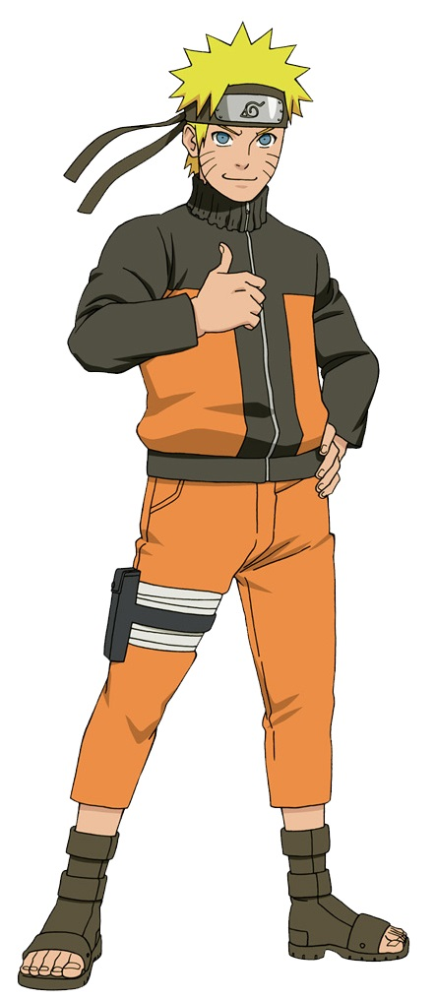
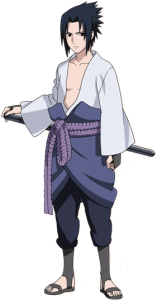
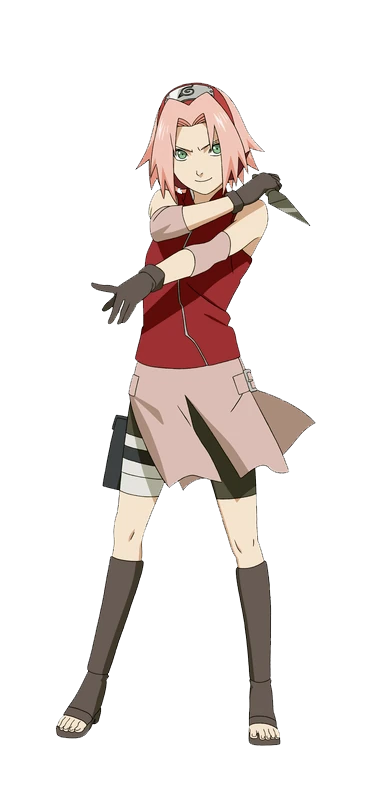
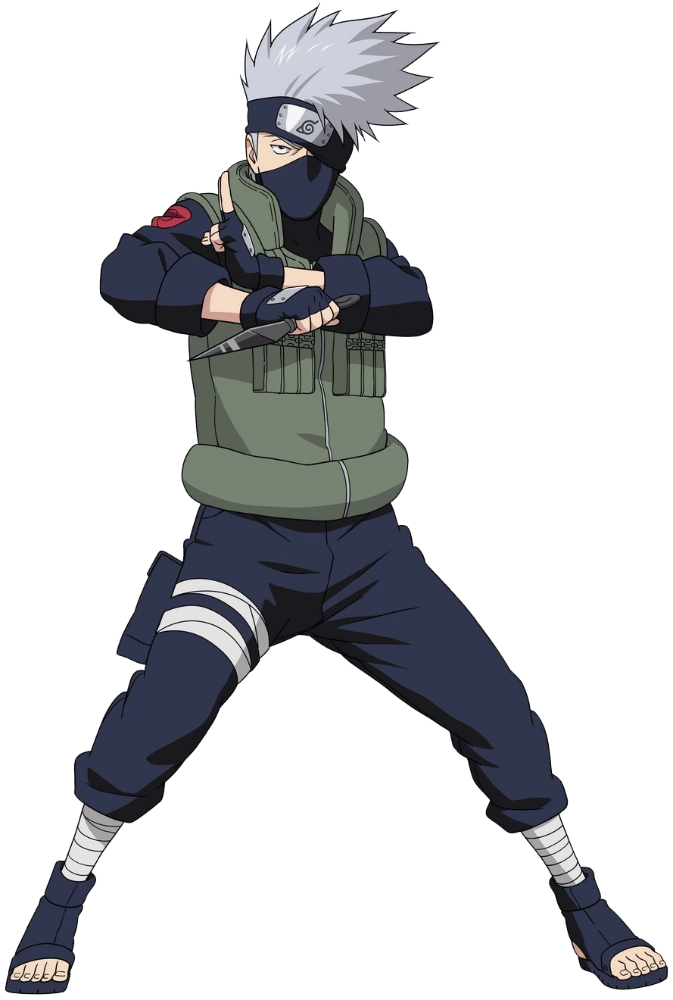
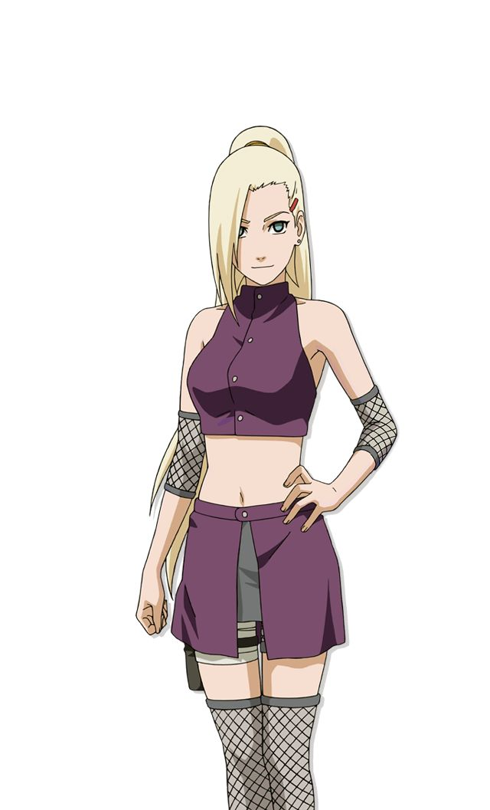
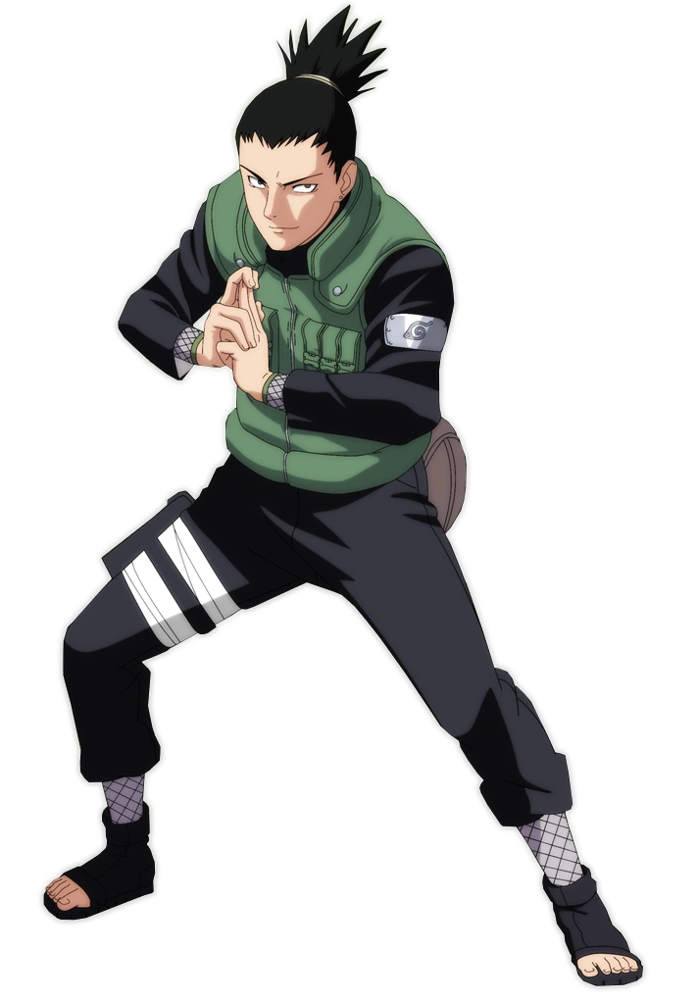
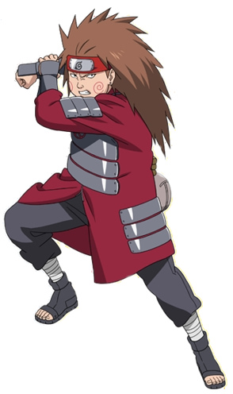

Naruto Uzumaki
Ninja determinado da Vila da Folha que sonha em se tornar Hokage.
Explore personagens icônicos, conheça suas vilas e descubra mais sobre o mundo ninja.

Ninja determinado da Vila da Folha que sonha em se tornar Hokage.

Último sobrevivente do clã Uchiha em busca de poder e vingança.

Ninja médica extremamente inteligente e forte da Equipe 7.

Líder da Equipe 7 conhecido como o Ninja Copiador.

Ninja especialista em técnicas mentais e integrante do time Ino-Shika-Cho.

Estrategista genial da Vila da Folha que controla sombras.

Ninja gentil do clã Akimichi que utiliza técnicas de expansão corporal.

Jounin experiente e mestre do Time 10 da Vila da Folha.